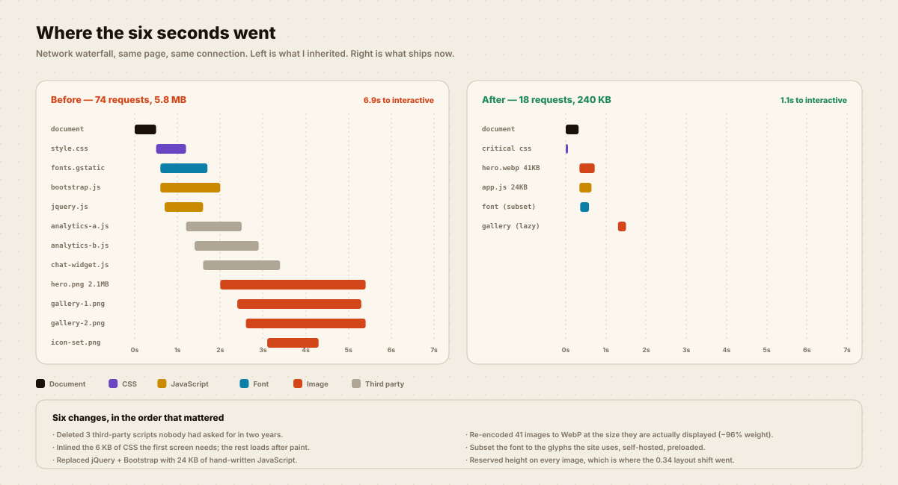
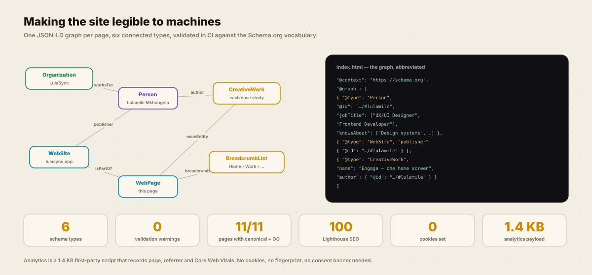

Frontend engineering & technical SEO
I AUDITED MY OWN SITE
AND DID NOT LIKE IT.
A portfolio that took 6.4 seconds to show anything is an argument against hiring me. So I rebuilt it, and this page measures itself while you read it.

Same page, same device, same connection. The only variable is the code.
THE AUDIT.
A designer’s portfolio that fails Core Web Vitals is a portfolio making an argument against itself. Mine was.
The three worst offenders
A 2.1 MB PNG hero, displayed at 800 px wide.
Six third-party scripts, three of which nobody had used in two years.
jQuery and Bootstrap loaded in full to do about forty lines of work.
The approach
Delete, then compress, then optimise — in that order. Most performance work is deletion wearing a technical hat.
WHAT I CHANGED.
Six changes, in the order that mattered. Click through them.

Where the layout shift went
Every image now declares its dimensions, so the browser reserves the space before the bytes arrive. That single change took CLS from 0.34 to 0.00.
Critical path
The first screen needs about 6 KB of CSS. That is inlined. Everything else loads after paint and nobody notices.
Fonts
Subset to the glyphs the site actually uses, self-hosted, preloaded, with font-display: swap. One preload removed a 400 ms hitch on first render.
What replaced 180 KB of library
A theme toggle, a mobile menu, a reading bar, tab groups, before/after sliders, counters, a lightbox and scroll reveal. All of it is in assets/case-study.js and you can read the whole thing.

Cookie-free analytics
Page, referrer and Core Web Vitals, sent to a first-party endpoint. No cookies, no fingerprinting, no consent banner needed because there is nothing to consent to.
Why it matters here
A consent banner is a layout shift and a blocking script wearing a legal costume. Not collecting the data was cheaper than asking permission for it.
MEASURE THIS PAGE.
Not a screenshot of my results — your browser, your connection, right now.
Time to first byte
—
good under 200 ms
First contentful paint
—
good under 1.8 s
Largest contentful paint
—
good under 2.5 s
Cumulative layout shift
—
good under 0.1
Transferred
—
budget 400 KB
These are your numbers, not a screenshot of mine. If they look bad on your connection, that is useful information and I would like to know about it.
FINDABLE, NOT JUST FAST.
Speed gets you indexed. Structure gets you understood.
THE NUMBERS.
Everything below is verifiable from this page’s source and your own dev tools.
THE HONEST BIT.
This is my own site, which means there is nobody to stop me marking my own homework.
Caveats you should hold me to
- 99 is the median of five runs on my rig. Your number will differ, which is exactly why the widget above measures yours instead of showing you mine.
- The case-study artefacts on this site are SVG, which is why they are small and sharp. A site full of photography could not hit these numbers the same way and I would not pretend otherwise.
- I have no real-user monitoring at scale — the traffic is too low for the percentiles to mean anything. Everything here is lab data, and lab data flatters.
- Google Fonts is still loaded from a CDN on a few pages. Self-hosting it everywhere is on the list and is not done.
WANT THIS
ON YOUR PRODUCT?
Tell me the one flow that matters most to your business and what it currently costs you. I will come back with what I would research first and what I would ship first.